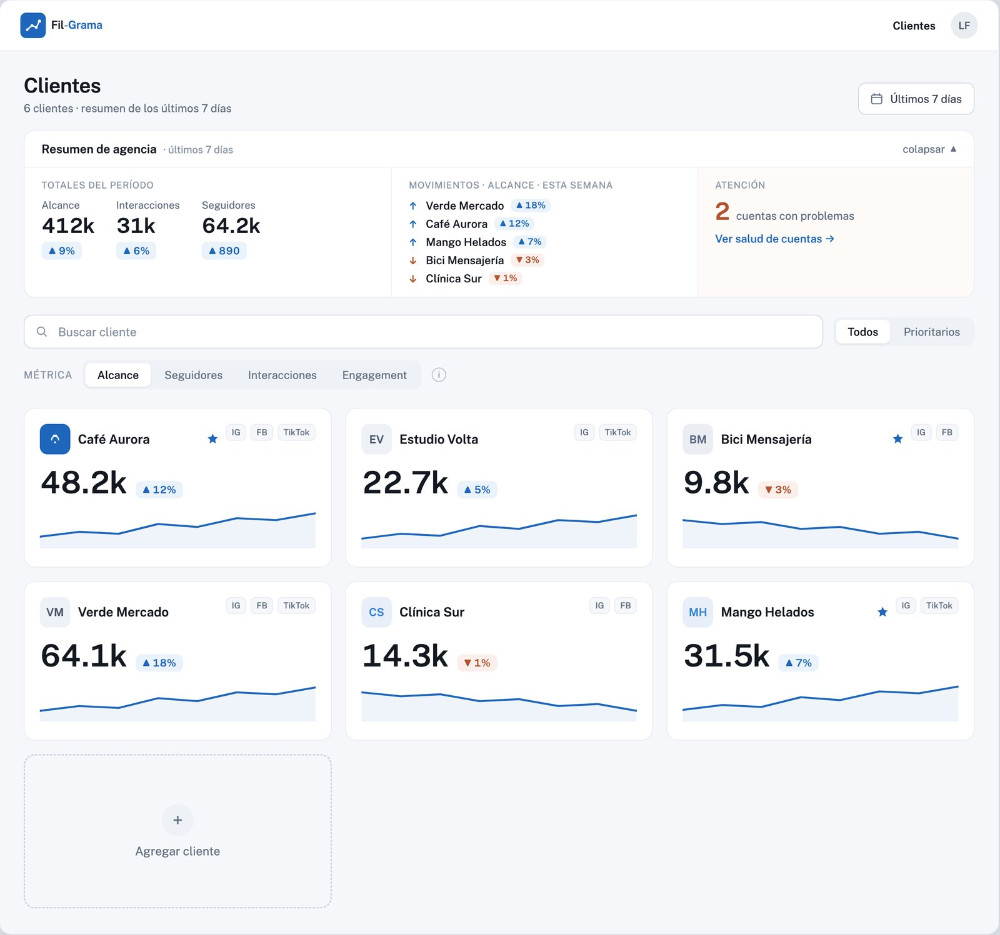
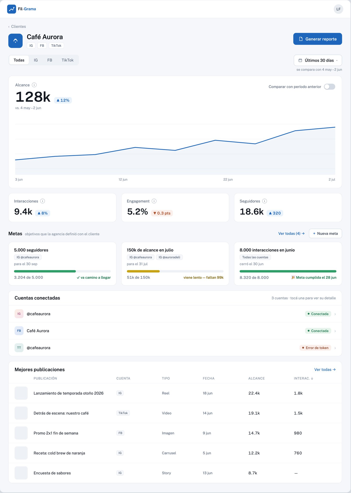
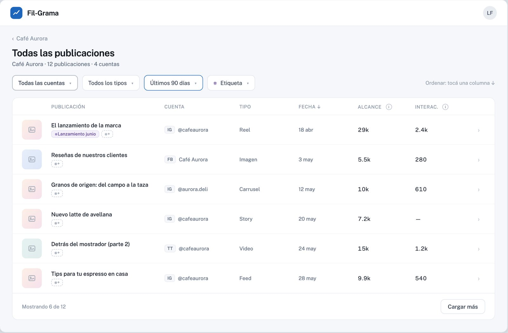
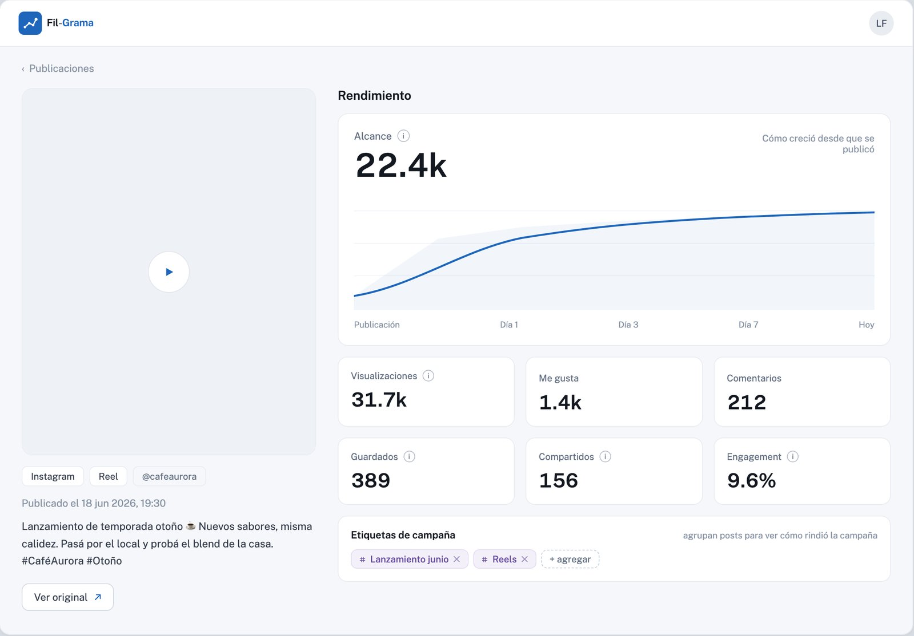
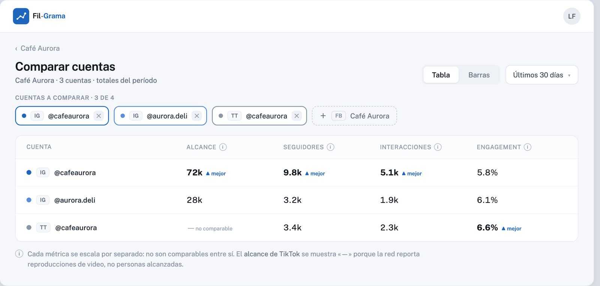
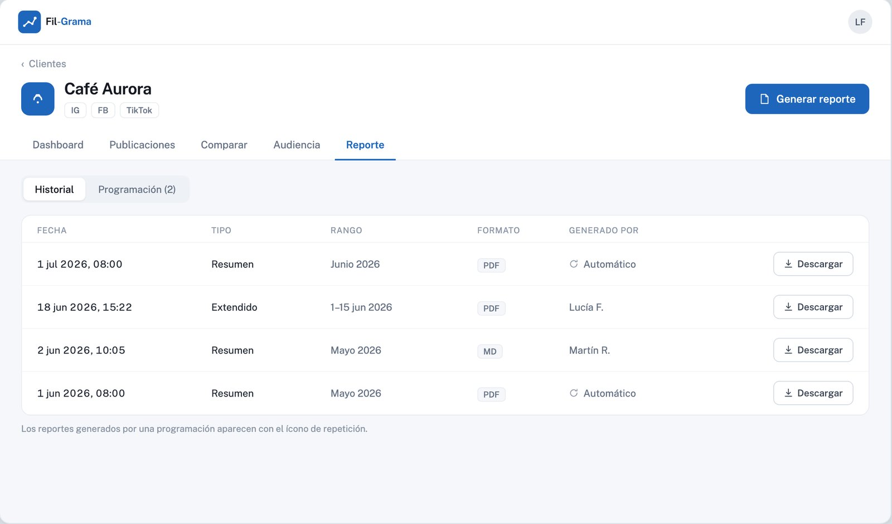
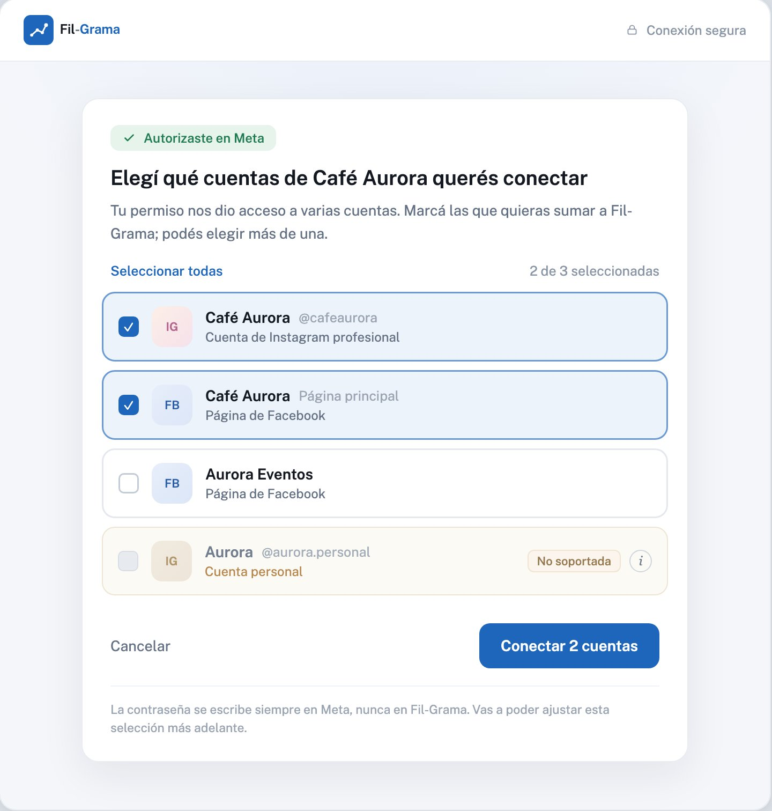
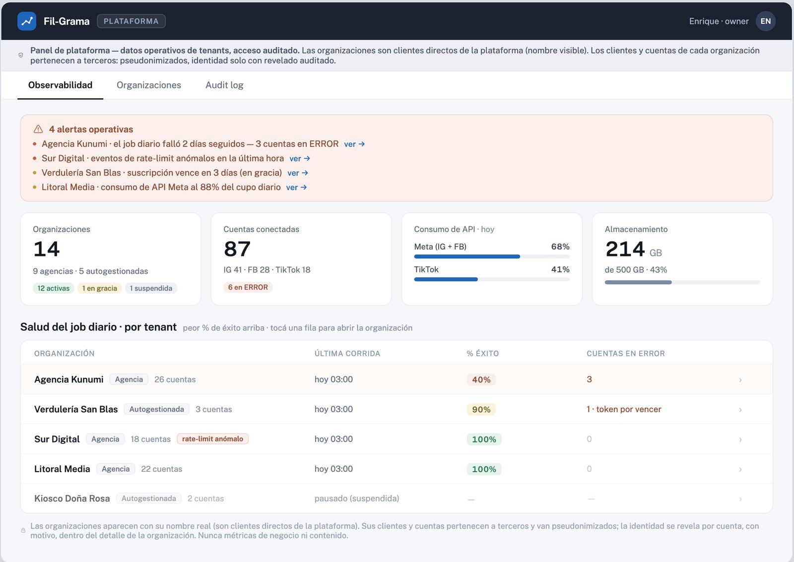

Diseño de producto
Diseñé el producto completo antes de escribir el código
Antes de construir, diseñé Fil-Grama de punta a punta: 50 pantallas en 6 áreas (acceso y OAuth, clientes, workspace de cliente, administración, panel de plataforma y modo autogestionado), cada una con vista de escritorio y móvil. El flujo de trabajo fue siempre el mismo: primero wireframe de baja fidelidad para acordar estructura y jerarquía, y recién con eso aprobado, la versión de alta fidelidad.
El diseño no quedó suelto: lo acompañan una guía de componentes, un mapa de navegación completo, una auditoría de consistencia visual y un handoff documentado para la implementación del frontend en React.
Del wireframe a la alta fidelidad
La misma pantalla (Audiencia) en sus dos etapas: estructura primero, identidad visual después.


Pantallas clave del diseño
Una selección de las 50 pantallas diseñadas, en alta fidelidad.








Diseños propios de producto (mockups con datos ficticios), previos a la implementación. Las capturas de la app real funcionando están en la sección siguiente.